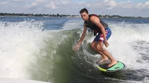

Chasing the Perfect Wake

Wakesurfing has become a passion of mine. Unlike traditional ocean surfing, the wave behind a specialized tow boat never ends. It requires a specific combination of boat weighting, board shape, and rider balance.
To master the sport, one must understand the three pillars of a great session:
- The Setup
- Ballast tank configuration
- Wedge or surf gate deployment
- Proper boat speed (usually 10.8 - 11.2 mph)
- The Gear
- Surf-style boards for big carves
- Skim-style boards for spins and tricks
- The Technique